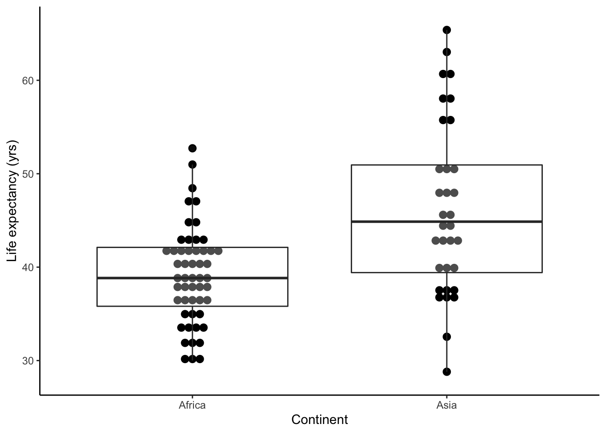

6 Basic statistical tests
R contains extremely powerful tools for data science. These tools are either built-in or available from packages. Thoughout this section we hope to demonstrate best practices organizing, analyzing, and visualizing data in R.
6.1 Getting ready
We will again work with the gapminder dataset. Let’s load the usual packages.
Now that we’ve loaded our packages, let’s briefly re-explore gapminder.
When you get a new dataset, your first action as a good data scientist should be to explore it.
## tibble [1,704 × 6] (S3: tbl_df/tbl/data.frame)
## $ country : Factor w/ 142 levels "Afghanistan",..: 1 1 1 1 1 1 1 1 1 1 ...
## $ continent: Factor w/ 5 levels "Africa","Americas",..: 3 3 3 3 3 3 3 3 3 3 ...
## $ year : int [1:1704] 1952 1957 1962 1967 1972 1977 1982 1987 1992 1997 ...
## $ lifeExp : num [1:1704] 28.8 30.3 32 34 36.1 ...
## $ pop : int [1:1704] 8425333 9240934 10267083 11537966 13079460 14880372 12881816 13867957 16317921 22227415 ...
## $ gdpPercap: num [1:1704] 779 821 853 836 740 ...## [1] "country" "continent" "year" "lifeExp" "pop" "gdpPercap"## # A tibble: 6 x 6
## country continent year lifeExp pop gdpPercap
## <fct> <fct> <int> <dbl> <int> <dbl>
## 1 Afghanistan Asia 1952 28.8 8425333 779.
## 2 Afghanistan Asia 1957 30.3 9240934 821.
## 3 Afghanistan Asia 1962 32.0 10267083 853.
## 4 Afghanistan Asia 1967 34.0 11537966 836.
## 5 Afghanistan Asia 1972 36.1 13079460 740.
## 6 Afghanistan Asia 1977 38.4 14880372 786.Note that we have 1,704 observations (rows). The variables country and continent are considered as “factor”, which is a catagorical data. “factor” is useful in that you can deal with a finite number of discrete values. We can use levels() to ask what catagories there are.
# there are 142 countries, but for the sake of space, we're only checking the first 5
head(levels(gapminder$country))## [1] "Afghanistan" "Albania" "Algeria" "Angola" "Argentina"
## [6] "Australia"## [1] "Africa" "Americas" "Asia" "Europe" "Oceania"6.2 Student’s t-test
Let’s start by asking the mean life expectancy of the continents in 1952.
## `summarise()` ungrouping output (override with `.groups` argument)## # A tibble: 5 x 2
## continent `mean(lifeExp)`
## <fct> <dbl>
## 1 Africa 39.1
## 2 Americas 53.3
## 3 Asia 46.3
## 4 Europe 64.4
## 5 Oceania 69.3The life expectancy of Europe is about 64.4 years. It seems close to 65, the standard age often associated with retirement in Canada (and when full pension benefits become available!). Is this statistically significantly different from 65 years?
To answer this question, we can use a one-sample t-test. We will test the sample (life expectancy measured in Europe in 1952) against our null hypothesis that there is no significant difference between the life expectancy in Europe (64.4 years) and 65 years.
# selection method 1: base R
method1 <- gapminder$lifeExp[gapminder$continent=='Europe' & gapminder$year==1952]
# selection method 2: use dplyr
method2 <- gapminder %>% filter(continent == 'Europe', year == 1952) %>% select(lifeExp)
# checking if these two methods give identical outputs
identical(method1, method2$lifeExp)## [1] TRUE# let's rename the variable for interpretability
Euro.life.1952 <- method1
t.test(Euro.life.1952, mu = 65, alternative = "two.sided")##
## One Sample t-test
##
## data: Euro.life.1952
## t = -0.50931, df = 29, p-value = 0.6144
## alternative hypothesis: true mean is not equal to 65
## 95 percent confidence interval:
## 62.03323 66.78377
## sample estimates:
## mean of x
## 64.4085Notice that p-value is 0.6144. Usually, we choose the alpha (\(\alpha\)) to be 0.05. Since p < \(\alpha\), we conclude that the life expectancy of Europeans in 1952 doesn’t give us evidence indicating a difference in life expectancy from 65.
We can also plot this:

Note: This is NOT a figure you would include in an academic paper as the quality is quite low. We’re visualizing this just so we have a better idea of what’s going on with the data.
The non-parametric test alternative to one-sample t-test is Wilcoxon signed-rank test.
##
## Wilcoxon signed rank test
##
## data: Euro.life.1952
## V = 238, p-value = 0.9193
## alternative hypothesis: true location is not equal to 65The non-parametric test gave us the same conclusion.
CAUTION: although we obtained the same results with both the parametric t-test and non-parametric signed-rank test, their use cases are VERY different. We prefer to use parametric tests because they give us more statistical power. Only use non-parametric tests with sample sizes less than 30 and if the data is not normally distributed.
Does Asia and Africa differ in life expectancy in 1952? To compare two groups of data, we need a two-sample t-test.
## # A tibble: 85 x 6
## country continent year lifeExp pop gdpPercap
## <fct> <fct> <int> <dbl> <int> <dbl>
## 1 Afghanistan Asia 1952 28.8 8425333 779.
## 2 Algeria Africa 1952 43.1 9279525 2449.
## 3 Angola Africa 1952 30.0 4232095 3521.
## 4 Bahrain Asia 1952 50.9 120447 9867.
## 5 Bangladesh Asia 1952 37.5 46886859 684.
## 6 Benin Africa 1952 38.2 1738315 1063.
## 7 Botswana Africa 1952 47.6 442308 851.
## 8 Burkina Faso Africa 1952 32.0 4469979 543.
## 9 Burundi Africa 1952 39.0 2445618 339.
## 10 Cambodia Asia 1952 39.4 4693836 368.
## # … with 75 more rowsWe can plot this:
# you don't need to explicitly declare data = As.Af and aes(x=continent, y=lifeExp)
# just make sure your variables are in the correct order
ggplot(As.Af, aes(continent, lifeExp)) +
geom_dotplot(binaxis = 'y', stackdir = 'center', dotsize=0.65) +
geom_boxplot(alpha=0.3) +
labs(x='Continent', y='Life expectancy (yrs)') +
theme_classic()## `stat_bindot()` using `bins = 30`. Pick better value with `binwidth`.
Here we want to run a two-sample t-test. Before we do that, we’ll need to check if the 2 samples have the same variance. Recall that different t-tests assume different variances:
- If you assume equal variance, you would use Student’s t-test.
- If variances are unequal, use Welch’s t-test.
A good rule of thumb is if the larger standard deviation (SD) divded by the smaller SD is less than 2 (SD(larger)/SD(smaller) < 2), then you can assume equal variance. Alternatively, you can test for equal variances:
## Levene's Test for Homogeneity of Variance (center = median)
## Df F value Pr(>F)
## group 1 12.514 0.0006644 ***
## 83
## ---
## Signif. codes: 0 '***' 0.001 '**' 0.01 '*' 0.05 '.' 0.1 ' ' 1Since \(p = 0.0006644 < 0.05\), the two samples have significantly different variances. Indeed, the width of the boxplots in the figure above suggested this difference.
Because we have different variances, we need to use Welch’s t-test. By default, t.test() assumes unequal variance. If this wasn’t the case, we would add an additional argument called var.equal = FALSE to t.test().
##
## Welch Two Sample t-test
##
## data: lifeExp by continent
## t = -4.0599, df = 44.637, p-value = 0.0001952
## alternative hypothesis: true difference in means is not equal to 0
## 95 percent confidence interval:
## -10.741084 -3.616704
## sample estimates:
## mean in group Africa mean in group Asia
## 39.13550 46.31439The non-parametric test in this case would be the independent 2-group Mann-Whitney U Test.
##
## Wilcoxon rank sum test with continuity correction
##
## data: lifeExp by continent
## W = 443, p-value = 0.0001857
## alternative hypothesis: true location shift is not equal to 0Next, let’s take a look at life expectancy in 2007:
## `summarise()` ungrouping output (override with `.groups` argument)## # A tibble: 5 x 2
## continent meanlife
## <fct> <dbl>
## 1 Africa 54.8
## 2 Americas 73.6
## 3 Asia 70.7
## 4 Europe 77.6
## 5 Oceania 80.7Has the life expectancy in Africa changed to that in 1952? We can answer this question with a two-sample t-test. This time, we would like to match the countries.
First, let’s generate a long data frame.
## # A tibble: 6 x 3
## country year lifeExp
## <fct> <int> <dbl>
## 1 Algeria 1952 43.1
## 2 Algeria 1957 45.7
## 3 Algeria 1962 48.3
## 4 Algeria 1967 51.4
## 5 Algeria 1972 54.5
## 6 Algeria 1977 58.0Second, let’s look at how the life expectancy changed over the years.
p <- ggplot(data = Africa, aes(x = year, y = lifeExp)) +
geom_point(aes(color = country)) +
geom_line(aes(group = country, color=country))
show(p)
Since the life expectancy in 1952 and 2007 look interesting, let’s visualize it:
# selecting rows with years 1952 and 2007
Africa.1952.2007 <- Africa %>% filter(year %in% c(1952, 2007))
# plotting
p <- ggplot(data = Africa.1952.2007, aes(x=as.factor(year), y=lifeExp)) +
geom_point(aes(color=country)) +
geom_line(aes(group = country, color=country))
show(p)
Most of the countries have improved, while a few have decreased life expectancy.
Before testing this observation, we should reorganize our data into a nice (wide) shape.
## # A tibble: 52 x 13
## country `1952` `1957` `1962` `1967` `1972` `1977` `1982` `1987` `1992` `1997`
## <fct> <dbl> <dbl> <dbl> <dbl> <dbl> <dbl> <dbl> <dbl> <dbl> <dbl>
## 1 Algeria 43.1 45.7 48.3 51.4 54.5 58.0 61.4 65.8 67.7 69.2
## 2 Angola 30.0 32.0 34 36.0 37.9 39.5 39.9 39.9 40.6 41.0
## 3 Benin 38.2 40.4 42.6 44.9 47.0 49.2 50.9 52.3 53.9 54.8
## 4 Botswa… 47.6 49.6 51.5 53.3 56.0 59.3 61.5 63.6 62.7 52.6
## 5 Burkin… 32.0 34.9 37.8 40.7 43.6 46.1 48.1 49.6 50.3 50.3
## 6 Burundi 39.0 40.5 42.0 43.5 44.1 45.9 47.5 48.2 44.7 45.3
## 7 Camero… 38.5 40.4 42.6 44.8 47.0 49.4 53.0 55.0 54.3 52.2
## 8 Centra… 35.5 37.5 39.5 41.5 43.5 46.8 48.3 50.5 49.4 46.1
## 9 Chad 38.1 39.9 41.7 43.6 45.6 47.4 49.5 51.1 51.7 51.6
## 10 Comoros 40.7 42.5 44.5 46.5 48.9 50.9 52.9 54.9 57.9 60.7
## # … with 42 more rows, and 2 more variables: `2002` <dbl>, `2007` <dbl>The wide data frame is to align the data from the same country to the same row, so that they have the same index when we call different columns.
Now, we can run a paired t-test. Think about what we are testing in the code below.
##
## Paired t-test
##
## data: Africa.wide$"2007" and Africa.wide$"1952"
## t = 13.042, df = 51, p-value < 2.2e-16
## alternative hypothesis: true difference in means is not equal to 0
## 95 percent confidence interval:
## 13.25841 18.08267
## sample estimates:
## mean of the differences
## 15.67054Note in this process we didn’t check the variance. Is this a problem? Why or why not? Recall that the paired t-test is actually a one-sample t-test on paired differences.
Similarly, we could again call wilcox.test to run the paired version.
##
## Wilcoxon signed rank test with continuity correction
##
## data: Africa.wide$"2007" and Africa.wide$"1952"
## V = 1369, p-value = 6.087e-10
## alternative hypothesis: true location shift is not equal to 06.3 Chi-squared test
6.3.1 \(\chi^2\) test for goodness-of-fit
This section requires basic of knowledge of Mendelian genetics regarding dominant and recessive alleles. Recall that crossing two heterozygotes (Aa x Aa) produces offspring with dominant and recessive phenotypes with an expected ratio of 3:1.
\[\begin{array}{c|cc} & \mathbf{A} & \mathbf{a} \\ \hline \mathbf{A} & AA & Aa \\ \mathbf{a} & Aa & aa \end{array}\]
Also recall that a dihybrid cross (AaBb x AaBb) produces offspring of 4 phenotypes with an expected ratio of 9:3:3:1.
\[\begin{array}{c|cccc} & \mathbf{AB} & \mathbf{Ab} & \mathbf{aB} & \mathbf{ab} \\ \hline \mathbf{AB} & AABB & AABb & AaBB & AaBb \\ \mathbf{Ab} & AABb & AAbb & AaBb & Aabb \\ \mathbf{aB} & AaBb & AaBb & aaBB & aaBb \\ \mathbf{ab} & AaBb & Aabb & aaBb & aabb \end{array}\]
Now, let’s focus on Mendel’s data from his original paper: Mendel, Gregor. 1866. Versuche über Plflanzenhybriden. Verhandlungen des naturforschenden Vereines in Brünn, Bd. IV für das Jahr 1865, Abhandlungen, 3–47.
In his experiment for seed color, the F2 generation produced 6022 yellow, and 2001 green seeds. Thus, the ratio of yellow:green was 3.01:1. Obviously, this ratio is not the exact theoretical ratio of 3:1. A meaningful question would be this: Is the discrepancy appeared because of random fluctuation, or is the observed ratio significantly different from 3:1?
To examine whether the observed count fits a theoretical ratio, we will uses the \(\chi%2\) test for goodness-of-fit.
##
## Chi-squared test for given probabilities
##
## data: c(6022, 2001)
## X-squared = 0.014999, df = 1, p-value = 0.9025A p-value of 0.9025 suggested a good match of observed data with the theoretical values. That is, the differences are not significant.
Let’s assume Mendel had observed a 1000 times larger number of seeds, with the same proportion. That is, 6,022,000 yellow and 2,001,000 green. Obviously this ratio is still 3.01:1. Would it still be a good fit for the theoretical value?
chisq.test(x = c(6022000, 2001000), # The observed data, 1000 times larger
p = c(0.75, 0.25)) # The theoretical probability##
## Chi-squared test for given probabilities
##
## data: c(6022000, 2001000)
## X-squared = 14.999, df = 1, p-value = 0.0001076This time, p = 0.0001076, suggesting a significant deviation from the theoretical ratio. As an extension of CLT, when you sample a large enough sample, the ratio of the categories should approach the true value. In other words, \(\chi^2\) test should be increasingly sensitive to small deviations when the sample size increases.
6.3.2 \(\chi^2\) test for independence
In another experiment, Mendel looked at two pairs of phenotypes of the F2 generation of a double-heterozygote. Below is what he saw:
- 315 round and yellow,
- 101 wrinkled and yellow,
- 108 round and green,
- 32 wrinkled and green.
Before we examine the 9:3:3:1 ratio, we want to ask if the two loci are independent of each other. That is, will being yellow increase or decrease the chance of being round (and vice versa)?
To run the \(\chi^2\) test for independence, we will first need a contingency table. This time we will manually build a data frame for this purpose.
Mendel2loci <- data.frame(
yellow = c(315, 101),
green = c(108, 32)
)
# adding rownames
rownames(Mendel2loci) <- c("round", "wrinkled")
# printing the data frame
Mendel2loci## yellow green
## round 315 108
## wrinkled 101 32Next we will run the \(\chi^2\) test. The null hypothesis is that the distribution is independent of the groups.
##
## Pearson's Chi-squared test with Yates' continuity correction
##
## data: Mendel2loci
## X-squared = 0.051332, df = 1, p-value = 0.8208The p-value of 0.8208, so we cannot reject the null hypothesis. Therefore, we should consider the two traits as independent.
Again, we could try to test for its goodness-of-fit. This time we will not need a contingency table.
##
## Chi-squared test for given probabilities
##
## data: c(315, 101, 108, 32)
## X-squared = 0.47002, df = 3, p-value = 0.9254Thus, the data fits the 9:3:3:1 ratio well.
6.3.3 \(\chi^2\) test for homogeneity
The homogeneity test works the same way as an independence test – the only difference lies in the experimentally design.
- A test for independence draws samples from the same population, and look at two or more categorical variables.
- A test for homogeneity draws sample from 2 or more subgroups of the population, and looks at another categorical variable. The subgroup itself serves as a variable.
Recall the hypotheses for the test for homogeneity:
- H\(_0\): the distribution of a categorical response variable is the same in each subgroup.
- H\(_a\): the distribution is not the same in each subgroup.
Let’s work through a real-life example.
Remdesivir and COVID-19
Remdesivir is an antiviral drug previously tested in animal models infected with coronaviruses like SARS and MERS. As of May 2020, remdesivir had temporary approval from the FDA for use in severely ill COVID-19 patients, and it was the subject of numerous ongoing studies.
A randomized controlled trial conducted in China enrolled 236 patients with severe COVID-19 symptoms; 158 were assigned to receive remdesivir and 78 to receive a placebo. In the remdesivir group, 103 patients showed clinical improvement; in the placebo group, 45 patients showed clinical improvement.
Reference
Wang, Y., Zhang, D., Du, G., Du, R., Zhao, J., Jin, Y., … Wang, C. (2020). Remdesivir in adults with severe COVID-19: a randomised, double-blind, placebo-controlled, multicentre trial. The Lancet. https://doi.org/10.1016/S0140-6736(20)31022-9
If we consider the treatment and the placebo group as two subgroups of the population, we would expect the ratios of clinical improvement to be different. Let’s do a \(\chi^2\) test for homogeneity. We will start with a contingency table.
rem_cont <- data.frame(treatment = c(103, 158-103),
placebo = c(45, 78-45))
rownames(rem_cont) <- c("improvement", "no improvement")
rem_cont## treatment placebo
## improvement 103 45
## no improvement 55 33Next we will run the test. Before we run the test, answer the following questions:
- What is our null hypothesis?
- What is our alternative hypothesis?
##
## Pearson's Chi-squared test with Yates' continuity correction
##
## data: rem_cont
## X-squared = 0.95518, df = 1, p-value = 0.3284What does this result mean?
6.3.4 Fisher’s exact test (OPTIONAL)
If the count in any cell of our contigency table is less than 5, the \(\chi^2\) test will not be useful because of its probability distribution assumption. In this case, we will use Fisher’s exact test.
The hypotheses of Fisher’s exact same as that of the \(\chi2\) test. Fisher’s exact test can be used for either homogeneity or independence, depending on your experimental design.
Suppose we have a sample 10 times smaller for the Remdesivir trial:
small_rem <- data.frame(treatment = c(10, 16-10),
placebo = c(4, 8-4))
rownames(rem_cont) <- c("improvement", "no improvement")
small_rem## treatment placebo
## 1 10 4
## 2 6 4We have many cells with <5 observations. In this case let’s run Fisher’s exact test.
##
## Fisher's Exact Test for Count Data
##
## data: small_rem
## p-value = 0.6734
## alternative hypothesis: true odds ratio is not equal to 1
## 95 percent confidence interval:
## 0.2140763 12.7643113
## sample estimates:
## odds ratio
## 1.630755The p-value is 0.6734. What does this result mean?
The odds ratio is yet another useful measurement you will often see in medical science articles. For the sake of time, I will leave it to you if you wish to read up on it.
6.3.5 Comparison of proportions (OPTIONAL)
In the Remdesivir study, the participants were randomly assigned to each group. Thus, the groups can be treated as independent. It is also reasonable to assume independence of patients within each group.
Suppose we have two proportions \(\hat{p}_1\) and \(\hat{p}_2\). Then, the normal model can be applied to the difference of the two proportions, \(\hat{p}_1 - \hat{p}_2\), if the following assumptions are fulfilled:
- The sampling distribution for each sample proportion is nearly normal.
- The samples are independent random samples from the relevant populations and are independent of each other.
Each sample proportion approximately follows a normal model when \(n_1p_1\), \(n_1(1 - p_1)\), \(n_2p_2\), and \(n_2(1-p_2)\) are all are \(\geq 10\). To check success-failure in the context of a confidence interval, use \(\hat{p}_1\) and \(\hat{p}_2\).
The standard error of the difference in sample proportions is \[\sqrt{\dfrac{p_1(1-p_1)}{n_1} + \dfrac{p_2(1-p_2)}{n_2}}. \]
For hypothesis testing, an estimate of \(p\) is used to compute the standard error of \(\hat{p}_1 - \hat{p}_2\): \(\hat{p}\), the weighted average of the sample proportions \(\hat{p}_1\) and \(\hat{p}_2\), \[\hat{p} = \dfrac{n_1\hat{p}_1 + n_2\hat{p}_2}{n_1 + n_2} = \dfrac{x_1 + x_2}{n_1 + n_2}. \]
To check success-failure in the context of hypothesis testing, check that \(\hat{p}n_1\) and \(\hat{p}n_2\) are both \(\geq 10\).
In this case, let’s calculate the The pooled proportion \(\hat{p}\): \[\hat{p} = \dfrac{x_1 + x_2}{n_1 + n_2} = 0.627\]
## [1] 0.6518987 0.5769231## [1] 0.6271186Next we will check the success-failure condition, which is, \(\hat{p}n_1\) and \(\hat{p}n_2\) are both \(\geq 10\).
## [1] 99.08475 48.91525## [1] 58.91525 29.08475The success-failure condition is met; the expected number of successes and failures are all larger than 10.
##
## 2-sample test for equality of proportions with continuity correction
##
## data: x out of n
## X-squared = 0.95518, df = 1, p-value = 0.3284
## alternative hypothesis: two.sided
## 95 percent confidence interval:
## -0.06703113 0.21698245
## sample estimates:
## prop 1 prop 2
## 0.6518987 0.5769231In this example, we tested \(H_0: p_1 = p_2\) against \(H_a: p_1 \neq p_2\) Here,
- \(p_1\) represents the population proportion of clinical improvement in COVID-19 patients treated with remdesivir, and
- \(p_2\) represents the population proportion of clinical improvement in COVID-19 patients treated with a placebo.
By convention, \(\alpha = 0.05\). The \(p\)-value is 0.3284, which is greater than \(\alpha\).
We conclude that there is insufficient evidence to reject the null hypothesis. Although the proportion of patients who experienced clinical improvement about 7% higher in the remdesivir group, this difference is not big enough to show that remdesivir is more effective than a placebo.
6.3.6 Contingency tables
Let’s come back to the data of Asia and Africa in 1952. Take a look at the distribution of the life expectancy for all countries in both continents.
## country continent year lifeExp
## Afghanistan: 1 Africa :52 Min. :1952 Min. :28.80
## Algeria : 1 Americas: 0 1st Qu.:1952 1st Qu.:37.00
## Angola : 1 Asia :33 Median :1952 Median :40.54
## Bahrain : 1 Europe : 0 Mean :1952 Mean :41.92
## Bangladesh : 1 Oceania : 0 3rd Qu.:1952 3rd Qu.:45.01
## Benin : 1 Max. :1952 Max. :65.39
## (Other) :79
## pop gdpPercap
## Min. : 60011 Min. : 298.9
## 1st Qu.: 1022556 1st Qu.: 684.2
## Median : 3379468 Median : 1077.3
## Mean : 19211739 Mean : 2783.3
## 3rd Qu.: 8550362 3rd Qu.: 1828.2
## Max. :556263527 Max. :108382.4
## Notice that the median of life expectancy is 40.54. That is, half of the countries had life expectancy greater than 40.54, and the other half less than 40.54.
Let’s define a catagorical variable: the countries with life expectancy > 40.54 years are “longer_lived”, and the others are “shorter_lived”.
As.Af["long_short"] <- NA
As.Af$long_short[As.Af$lifeExp > 40.54] <- "longer_lived"
As.Af$long_short[is.na(As.Af$long_short)] <- "shorter_lived"Now let’s see if the longer lived or shorter lived variable is independent of the continent variable. We realize that both variables are categorical. In this case, we will use chi-squared test.
First, we will make a contingency table of the two variables.
##
## longer_lived shorter_lived
## Africa 21 31
## Asia 22 11Here, our null hypothesis is that countries are independent of the continent it’s a part of. Likewise, our alternative hypothesis is that countries are dependent (not independent) of the continent it’s a part of.
##
## Pearson's Chi-squared test with Yates' continuity correction
##
## data: cont
## X-squared = 4.5769, df = 1, p-value = 0.03241Given that \(p < 0.05\), our null hypothesis that the two variables are independent is rejected. Whether a country is longer lived or shorter lived is dependent on the continent it is located in.
N.B., this is only a comparison between Africa and Asia, and does not hold true for all continents.
6.4 Visualizing data distributions (OPTIONAL)
Knowing the properties of the normal distribution is essential in understanding the normal distribution. The position of the peak indicates the mean, whereas the spread of the curve indicates the variance.
Although you might not think your data follows a bell curve, let’s take a look at this example for our exercise. Let’s first install a package that helps us create ridgeline plots.
Here we will plot the distribution of the life expectancy of African countries in different years. For each year, distributions are sectioned into quartiles. What could you say about the trend over the years? Please discuss both the mean and variance. What does it mean?
library(ggridges)
# getting all rows with Africa as the continent
Africa.all <- gapminder %>% filter(continent == "Africa", year > 1990)
# plotting
p <- ggplot(Africa.all, aes(lifeExp, as.factor(year), fill=factor(stat(quantile)))) +
stat_density_ridges(quantiles=4,
quantile_lines=T,
geom = 'density_ridges_gradient') +
scale_fill_viridis_d(name='Quartile') +
labs(x='Life expectancy (yrs)', y='Year') +
theme_classic()
show(p)## Picking joint bandwidth of 3.6
Let’s take a look at the mean and standard deviation to see if your guess is correct.
Africa.all %>%
select(c(year, lifeExp)) %>%
group_by(as.factor(year)) %>%
summarize(mean_life = mean(lifeExp), sd_life = sd(lifeExp))## `summarise()` ungrouping output (override with `.groups` argument)## # A tibble: 4 x 3
## `as.factor(year)` mean_life sd_life
## <fct> <dbl> <dbl>
## 1 1992 53.6 9.46
## 2 1997 53.6 9.10
## 3 2002 53.3 9.59
## 4 2007 54.8 9.63This visualization shows the same information as that in with the density plots, but in a more digestible manner.
p <- ggplot(data = Africa.all, aes(x=as.factor(year), y=lifeExp)) +
geom_dotplot(binaxis = 'y', stackdir = 'center', binwidth = 1) +
geom_boxplot(alpha=0.3)
show(p)
You may want to remove the gray background and decrease dot size. This is as easy as specifying the dotsize parameter and adding theme_classic(). There a lot more themes out there! Check them out here.
p <- ggplot(data = Africa.all, aes(x=as.factor(year), y=lifeExp)) +
geom_dotplot(binaxis = 'y', stackdir = 'center', binwidth = 1, dotsize = 0.65) +
geom_boxplot(alpha=0.3) +
theme_classic()
show(p)
While we’re at it, let’s also rename the x- and y-axis. Since we’ve saved the plot already, let’s add a label layer to the plot.

Now this figure is publication-ready.